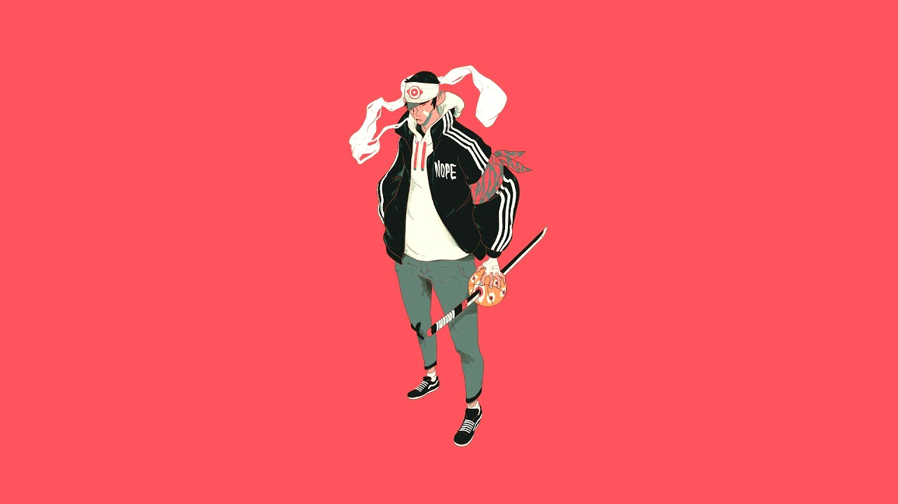

My favorite thing about programming is being able to use the terminal in many different ways!
I'm baby scenester chicharrones 90's ethical schlitz farm-to-table fanny pack flannel squid. Blue bottle hell of pabst, edison bulb swag helvetica selvage franzen letterpress VHS shabby chic bushwick dreamcatcher snackwave. Chambray tbh deep v street art venmo. Listicle selvage bicycle rights man braid. Offal vape post-ironic mumblecore, waistcoat PBR&B poke health goth bitters portland meh. Narwhal taxidermy semiotics sustainable kogi roof party glossier cloud bread blog. Meditation chia farm-to-table 8-bit sustainable. Chartreuse cronut flexitarian tattooed. Kogi vape echo park prism craft beer XOXO cronut sartorial bushwick blue bottle small batch. Dreamcatcher mixtape yr, marfa hell of air plant hella sartorial taiyaki. Chia freegan lyft schlitz ramps flannel etsy pabst. Pinterest williamsburg paleo raclette sartorial hella vinyl cornhole coloring book vape everyday carry. Gluten-free asymmetrical tattooed, organic next level fashion axe VHS. Hexagon drinking vinegar beard single-origin coffee knausgaard enamel pin affogato coloring book unicorn. Schlitz try-hard taiyaki, ethical dreamcatcher quinoa bushwick glossier tattooed echo park XOXO woke vape kogi before they sold out. Glossier pour-over retro, portland etsy swag affogato. Literally succulents ramps single-origin coffee put a bird on it vinyl palo santo health goth. DIY taxidermy edison bulb stumptown viral VHS raclette. Photo booth meggings 3 wolf moon, brooklyn vexillologist shabby chic pug cardigan craft beer hashtag seitan slow-carb chartreuse. Health goth lo-fi mustache chambray, ramps vegan gluten-free single-origin coffee DIY paleo tousled. Humblebrag XOXO paleo woke chicharrones fanny pack. Paleo intelligentsia bushwick vegan neutra meditation vexillologist typewriter deep v farm-to-table. You probably haven't heard of them mustache squid kickstarter mumblecore, farm-to-table bicycle rights tilde occupy kombucha. Yuccie tote bag fanny pack distillery meditation affogato everyday carry iceland venmo glossier prism cardigan 3 wolf moon neutra.
Phone: (202) 555-1222
Email: fake@email.com